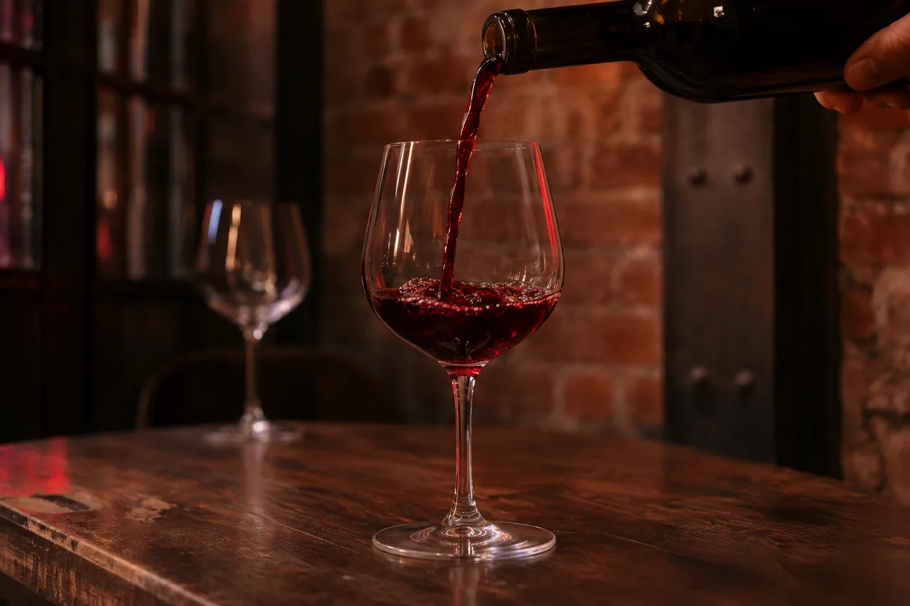
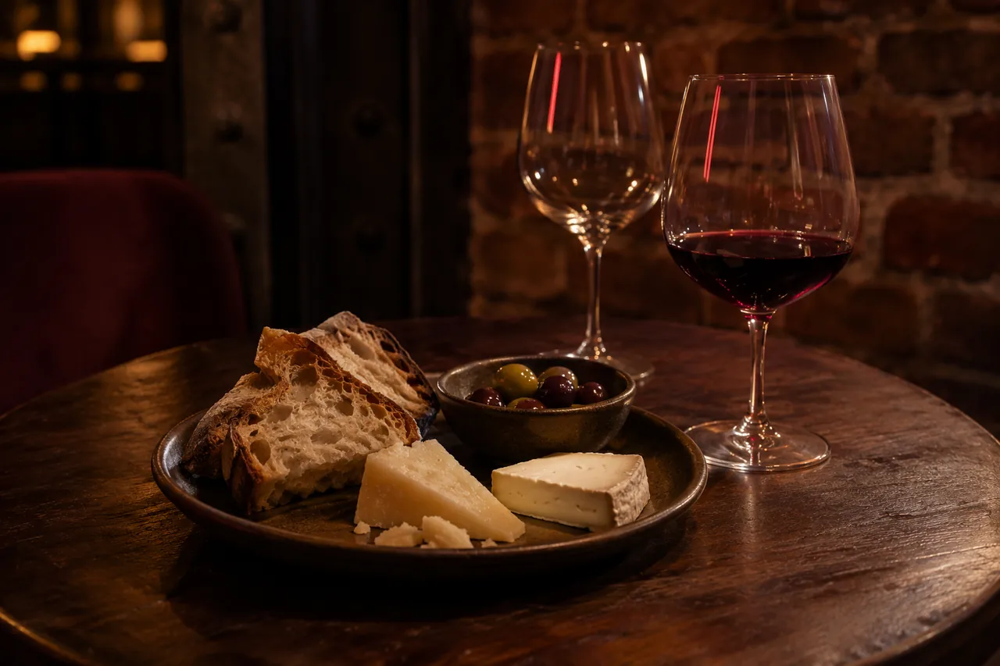
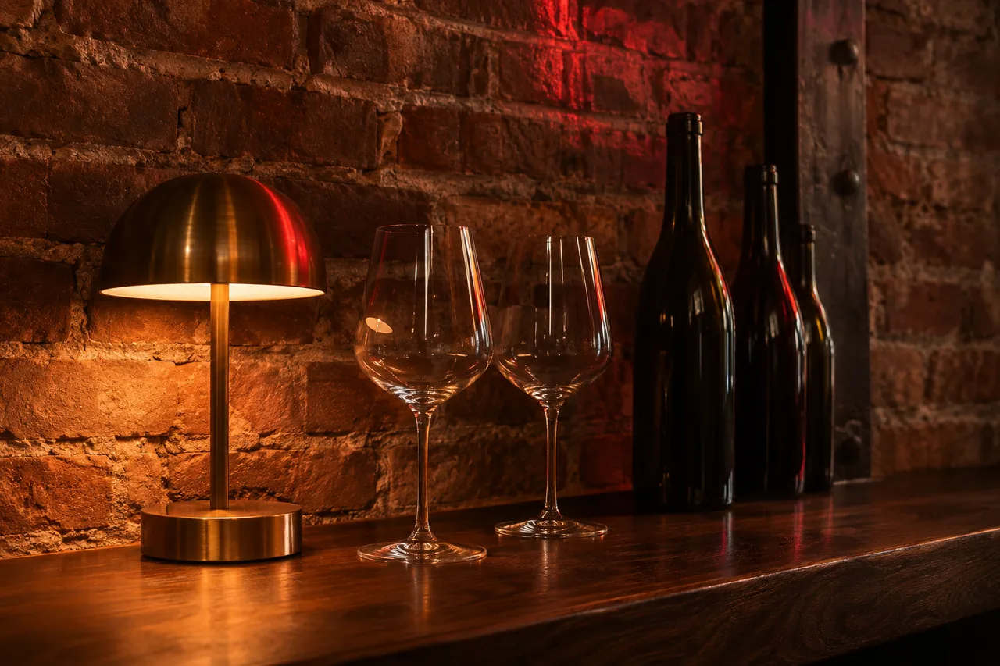
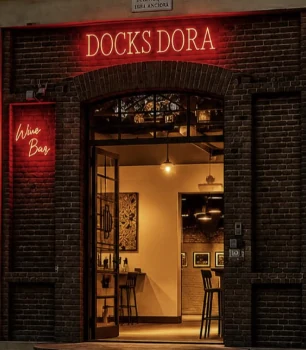

Vineria con cucina
Wine bar Docks Dora
Da martedì a sabato, dalle 17 a mezzanotte.
Mar–sab 17:00–24:00
Via Valprato 68, Torino
dentro i Docks Dora
Per prenotare si chiama.
Vino / Cucina / TorinoIl posto
Il posto
Dove il vino incontra il gusto
-

Vini selezionati -

Cucina di qualità -

Atmosfera unica
Una vineria con cucina dentro i Docks Dora: mattoni, luce calda e un'insegna rossa accesa sopra la porta.
Le tre immagini di atmosfera sono illustrative, create per questa anteprima.
Serate
Via Valprato · 68
Dove e quando.
Via Valprato 68Torino, dentro i Docks Dora
- Entra ai Docks Dora da Via Valprato 68.
- Piazzetta Mulassano, manica centrale, di fronte all'ingresso carraio
- Cerca l'insegna rossa Docks Dora sopra la porta ad arco.

Orari
| Lunedì | Chiuso |
|---|---|
| Martedì | 17:00–24:00 |
| Mercoledì | 17:00–24:00 |
| Giovedì | 17:00–24:00 |
| Venerdì | 17:00–24:00 |
| Sabato | 17:00–24:00 |
| Domenica | Chiuso |